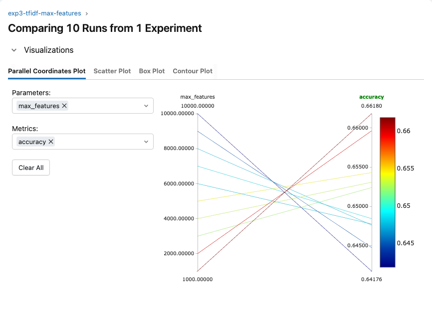
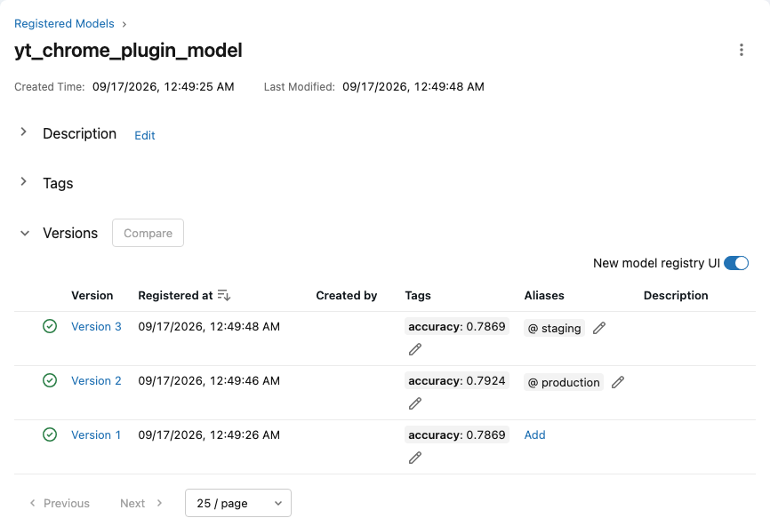
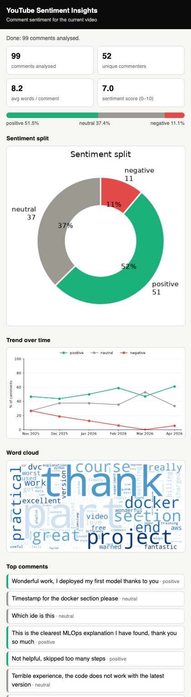
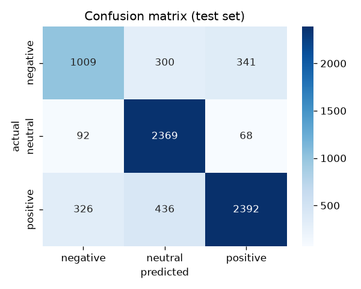
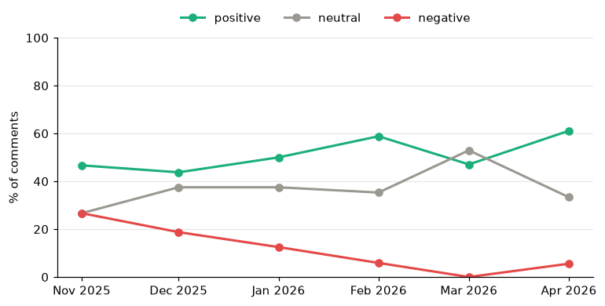
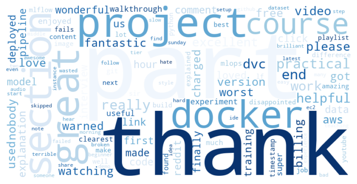

The course's capstone project. A Chrome extension reads the comments on the YouTube video you're watching and shows how many are positive, neutral and negative. The instructor runs the full workflow: plan the project, explore and clean a Reddit comment dataset, host MLflow on EC2 with S3, run six rounds of tracked experiments to pick a model (LightGBM), turn the notebooks into a 5-stage DVC pipeline that registers the model, serve it with a Flask API, build the Chrome extension, and prepare the Dockerfile and CI/CD file for deployment in the next chapter.
A creator with a big channel can't read thousands of comments. The project reads them automatically and gives a summary: what share of the audience is positive, neutral and negative. The creator can use that to improve their content.
Supervised, multi-class classification. One column holds the comment text and another holds its label: positive, neutral or negative. Three classes make it multi-class; two would make it binary.
The instructor admits that a transformer (e.g. BERT) or an LLM would give a better-quality model. The point of this chapter is the MLOps workflow (pipeline, tracking, serving), and a text classifier built with classic ML is enough to show it.
The problem statement matters less than the workflow: how to analyse data, track experiments, build a pipeline, and serve the model. The same MLOps skeleton works for a deep-learning, NLP or GenAI model.
Why an extension instead of a website or app? When you open a video, the extension detects that video, fetches its comments and shows a dashboard right away. You don't need to copy links anywhere.
Features the instructor sketches:
Collecting YouTube comments through the API is possible, but slow. Comments also depend on the category of the channel (education, entertainment, movies…), so you would need to pick one first. To keep things simple, the course uses a public Reddit sentiment dataset. It's on Kaggle, and the course loads a copy from GitHub with pd.read_csv(url).
| Column | Meaning |
|---|---|
clean_comment | the comment text (already partly cleaned by the dataset author) |
category | 1 = positive · 0 = neutral · −1 = negative |
For a real sentiment analyser, collect your own data from the category you want to analyse (e.g. your channel's comments). The Reddit set is only a stand-in with similar kinds of comments.
The instructor uses Google Colab for experiments (libraries come pre-installed) and VS Code on his own machine for the pipeline. Here are the steps from his notebook, with the numbers from our re-run:
| Check | Finding | Action |
|---|---|---|
| Shape | 37,249 rows × 2 columns | – |
| Missing values | 100 empty clean_comments, all labelled 0 | drop them (0.3% of rows; the instructor says you'd handle it differently if 30–50% were missing) |
| Duplicates | 449 in our copy (the video showed ≈350) | drop them |
| Blank comments (only spaces or newlines) | 221 | drop them |
| Case | "Good" ≠ "good" to a model | lowercase everything |
| Leading and trailing spaces | present; they would become empty tokens | strip() |
| URLs | none found (checked with a regex) | – |
\n inside comments | present | replace with a space |
| Non-English and special characters | 6% of comments (Hindi, Arabic, Chinese, emoji…) | remove with a regex |
36,793 comments after cleaning. The video reports 42% / 34% / 22%.
Negative comments are the minority class, so a model can look accurate while missing many of them. That is why later experiments watch negative-class recall, and experiment 4 is about imbalance.
| Feature (new column) | negative | neutral | positive | What it tells us |
|---|---|---|---|---|
| median words per comment | 20 | 7 | 21 | opinions take more words (thank-yous, explanations); plots are right-skewed with many outliers |
| mean words per comment | 34.9 | 9.9 | 42.9 | 5% of comments are over 100 words |
| median characters | 119 | 40 | 128 | same pattern as words |
While showing the word-count plots, the instructor says the neutral class has more words (the tall peak near zero). A tall peak at a small count means neutral comments are mostly short. The table above confirms it: neutral median = 7 words, versus about 20 for the other classes. The same goes for stop words: neutral comments contain fewer in total, just a higher share of their words.
CountVectorizer(ngram_range=(2,2)) / (3,3)): "free encyclopedia", "encyclopedia team", "good good"… The instructor admits this step isn't strictly necessary; he added it after seeing it in Kaggle notebooks, and recommends Kaggle notebooks as the best way to learn EDA and feature engineering.Every step above ends up in one function, preprocess_comment. The pipeline and the API both call it: training and serving must clean text identically. Two steps matter most:
not, no, but, however, yet. Without them, "I do not like this movie" loses its meaning.not is the most frequent word in every class, which is why it only becomes informative inside n-grams like "not good".no never appears, so two-letter words seem to have been removed before publication.In Chapter 15, MLflow was hosted on DagsHub. Here the instructor wants a private server (DagsHub repos are public by default) and notes that companies commonly host MLflow on their own cloud.
--default-artifact-root, the MLflow server only tells clients where to write artifacts. The client uploads them to S3 itself, which is why the Colab notebook and the laptop also need AWS credentials.IAM user mlflow-server: attach policies directly → AdministratorAccess → create. Then Security credentials → Create access key → CLI → download the CSV. (Region: us-east-1, N. Virginia.)
S3 bucket for artifacts, e.g. mlflow-bucket-25. The name must be globally unique; keep the other settings at their defaults.
EC2 instance mlflow-machine: Ubuntu 24.04 LTS, t2.medium (4 GB RAM), a new key pair (required even if you use the browser terminal), allow HTTP/HTTPS, 30 GB storage → Launch → Connect (EC2 Instance Connect).
Install (the commands come from the instructor's MLflow demo repo):
sudo apt update
sudo apt install python3-pip
sudo apt install pipenv
sudo apt install virtualenv
mkdir mlflow && cd mlflow
pipenv install mlflow
pipenv install awscli
pipenv install boto3
pipenv shell # activate the environment
aws configure # access key, secret key, us-east-1, default outputStart the server with your bucket name:
mlflow server -h 0.0.0.0 --default-artifact-root s3://mlflow-bucket-25Open port 5000: instance → Security → security group → Edit inbound rules → Custom TCP, 5000, 0.0.0.0/0 → Save.
Open the UI at http://<public-IPv4-DNS>:5000. If the browser switches to https://, remove the "s": the server only speaks HTTP.
Test it from Colab: pip install mlflow boto3 awscli, aws configure, then mlflow.set_tracking_uri("http://ec2-…:5000/") and a run that logs a dummy parameter and metric. It appears under the Default experiment.
The video uses AdministratorAccess keys, shows them on screen ("I'll delete them after recording"), and opens port 5000 to the whole internet with no login, so anyone who finds the IP can read or delete your runs. For real use:
Also, the run metadata lives on the instance's disk, so terminating the instance loses every run. The instructor actually hit this: he terminated the server between recording days and had to start a new one. For a durable server, point --backend-store-uri at a database such as RDS PostgreSQL.
The notebook applies the same cleaning function to the whole dataset and then:
CountVectorizer(max_features=10000) (bag of words) → X has shape (36k, 10000).mlflow.set_tracking_uri(...) and mlflow.set_experiment("RF Baseline"). A dedicated experiment is used instead of Default.aws configure in Colab, so artifacts can reach S3.with mlflow.start_run(): block that:
vectorizer_type, max_features, and n_estimators and max_depth for the Random Forest)classification_reportResult in the video: 64% accuracy, with high precision but poor recall on the minority classes, which points to imbalance. The cleaned data is then saved as reddit_preprocessing.csv, so later notebooks don't repeat the preprocessing. In S3, each run's artifacts sit under <experiment_id>/<run_id>/.
CountVectorizer)Raw counts of each term. ngram_range=(1,1) is unigrams; (1,2) adds bigrams (two-word tokens); (1,3) adds trigrams.
TfidfVectorizer)Counts are down-weighted for terms that appear in many documents, so rarer, more specific terms stand out. (Word2Vec was mentioned but not tried.)
Experiment 2 ("Exp 2 – BoW vs TfIdf") is a loop over 2 vectorizers × 3 n-gram settings with 5,000 features: 6 runs. In the MLflow UI: select all → Compare → parallel coordinates plot, then switch the metric.
| Metric chosen in the plot (video) | Winner |
|---|---|
| accuracy | BoW + bigrams (≈ 65%) |
| negative-class precision | BoW + bigrams |
| negative-class recall (the deciding metric) | TF-IDF + trigrams ✔ |
Why recall? Because of the imbalance, precision on the minority class looks good while many negatives are still missed. Recall tells you how many of the real negatives you catch.
Experiment 3 ("Exp 3 – TfIdf Trigram max_features") fixes TF-IDF (1,3) and loops max_features over 1000, 2000, …, 10000: 10 runs. In the video, accuracy rises as features decrease, negative precision is higher with more features, and negative recall is best at 1000. Conclusion: 1000 features (fewer features, higher recall).

max_features as the parameter and accuracy as the metric. Lines from low feature counts end at the top (red). Switch the metric to negative_recall to repeat the instructor's second check.With TF-IDF (1,3) and 1000 features fixed, the notebook tries five techniques in a loop (resampling only the training split):
| Technique | How it works | In the video's comparison |
|---|---|---|
class_weight="balanced" | mistakes on rare classes cost more; the data is unchanged | – |
| Oversampling (SMOTE) | creates synthetic minority rows by interpolating between neighbours | best overall once positive precision and recall are also compared ✔ |
| ADASYN | SMOTE that generates more rows where the minority class is hardest to learn | – |
| Undersampling | drops majority rows (RandomUnderSampler) | highest accuracy and negative precision |
| SMOTEENN | SMOTE, then removes noisy rows with Edited Nearest Neighbours. (The instructor: "SMOTE-ENN and SMOTE are different things.") | highest negative recall |
TF-IDF · trigrams (1,3) · max_features=1000 · SMOTE oversampling. Every later model is trained with these settings. The instructor's summary also mentions the baseline's 64%, the starting point these settings improve on.
With the settings fixed, the instructor trains several classifiers (XGBoost, decision tree, KNN, naive Bayes, LightGBM…), each with Optuna hyperparameter tuning. Each model has its own notebook, because tuning them all in one notebook takes too long. He shows two:
learning_rate=0.09, max_depth=20, n_estimators=367.He says Optuna is more powerful than GridSearchCV and encourages you to try other models: "only the model changes; the rest of the code stays the same."
Stacking combines several models: base learners logistic regression + KNN + LightGBM, and a meta-learner on top (StackingClassifier). The result was about the same as LightGBM alone, so the instructor kept the simpler LightGBM. A stack is a more complex architecture to run and maintain.
Our 2_experiments.ipynb puts all six rounds in one notebook with fewer Optuna trials, so it finishes in minutes. It fits vectorizers on the training split only, and tunes on a validation split carved from training data. The best configuration then gets one test-set score. Absolute numbers differ from the video's, but the conclusions are what matter.
The notebook code is rewritten as modular Python files, chained with dvc.yaml. The components:
.gitignore, MIT licence) → git clone → open it in VS Code.notebooks/ (the Colab notebooks, for reference), data/ (pipeline outputs), src/data/ and src/model/ with an __init__.py so src is a local package, plus dvc.yaml, params.yaml, requirements.txt and setup.py.conda create -n youtube python=3.11 → pip install -r requirements.txt. Its last line, -e ., installs src via setup.py, which creates the *.egg-info folder.dvc init (git must already be initialised, which the clone provides).data/ to .gitignore → git add . && git commit && git push origin main.The instructor adds one stage to dvc.yaml at a time and runs dvc repro after each. Stages that already ran are skipped ("didn't change, skipping"), so each new run starts at the newest stage. Every module follows the same pattern: a logger, load_params(), load_data(), the step itself, save_…(), and a main() wrapped in try/except.
# dvc.yaml (the course's version; the hands-on file is the same plus two extra deps)
stages:
data_ingestion:
cmd: python src/data/data_ingestion.py
deps: [src/data/data_ingestion.py]
params: [data_ingestion.test_size]
outs: [data/raw]
data_preprocessing:
cmd: python src/data/data_preprocessing.py
deps: [data/raw/train.csv, data/raw/test.csv, src/data/data_preprocessing.py]
outs: [data/interim]
model_building:
cmd: python src/model/model_building.py
deps: [data/interim/train_processed.csv, src/model/model_building.py]
params: [model_building.max_features, model_building.ngram_range, model_building.learning_rate,
model_building.max_depth, model_building.n_estimators]
outs: [lgbm_model.pkl, tfidf_vectorizer.pkl]
model_evaluation:
cmd: python src/model/model_evaluation.py
deps: [lgbm_model.pkl, tfidf_vectorizer.pkl, data/interim/train_processed.csv,
data/interim/test_processed.csv, src/model/model_evaluation.py]
outs: [experiment_info.json]
model_registration:
cmd: python src/model/register_model.py
deps: [experiment_info.json, src/model/register_model.py] # no outs: its effect is in MLflowBefore this stage, the laptop needs the AWS CLI (the MSI installer on Windows) and aws configure, so MLflow can upload artifacts to S3. The EC2 server had been terminated between recording days, so the instructor launched a new one. The stage:
tfidf_vectorizer.pkl to an experiment named dvc-pipeline-runsexperiment_info.json with the run ID and model path; the registration stage needs this fileIn S3, the model sits under <experiment_id>/<run_id>/artifacts/lgbm_model/.
register_model.py reads the JSON, calls mlflow.register_model() with the name yt_chrome_plugin_model, and moves the new version to the Staging stage. After dvc repro, the UI's Models tab shows version 1 · Staging. The API can load the model from there.
Stages are deprecated. Use aliases instead: client.set_registered_model_alias(name, "staging", version), then load models:/yt_chrome_plugin_model@staging. The hands-on uses aliases.

@staging on the newest and @production on the best. The notebook shows why there are three: changing n_estimators and changing it back re-ran the registration stage.The back end sits between the extension and the model. It receives comments, preprocesses them with the same function, vectorizes them with the saved TF-IDF object (raw text must become numbers the same way as in training), predicts, and returns the result.
| Route | Input (JSON) | Output |
|---|---|---|
| GET / | – | "Welcome to our flask API": a health check |
| POST /predict | {"comments": ["…", "…"]} | [{"comment", "sentiment"}]; an error if no comments are sent |
| POST /predict_with_timestamps | {"comments": [{"text", "timestamp"}]} | the same, plus the timestamp (feeds the trend graph) |
| POST /generate_chart | {"sentiment_counts": {"1": n, "0": n, "-1": n}} | pie chart PNG |
| POST /generate_wordcloud | {"comments": [...]} | word cloud PNG |
| POST /generate_trend_graph | {"sentiment_data": [{"timestamp", "sentiment"}]} | monthly sentiment-share line chart PNG |
Two ways to load the model are in the code:
mlflow.pyfunc.load_model("models:/yt_chrome_plugin_model/1")), with the vectorizer from disk.lgbm_model.pkl. The instructor used this option because his EC2 server was gone.Only the first four routes are written at first, and the rest are added when the extension asks for them. python flask_api/main.py starts the API on localhost:5000.
New request → POST → http://localhost:5000/predict → Body → raw → JSON:
{ "comments": ["This video is awsome! I loved a lot", "Very bad explanation. poor video"] }The response is sentiment 1 for the first comment and −1 for the second. "Your video is good, nice presentation" also comes back positive. The instructor notes that political comments work best, because that's what the training data contains.
The instructor generated the front end with ChatGPT ("even I'm not good at HTML, CSS and JavaScript"). A Chrome extension needs three files:
| File | Role |
|---|---|
manifest.json | name, version, description, the action (which HTML file pops up), permissions |
popup.html | the popup's layout and CSS |
popup.js | reads the tab URL → video ID → fetches comments with the YouTube Data API (API key) → calls the Flask routes → draws the metrics and charts |
API key: GCP console (needs an account with a card) → search "YouTube Data API" → enable it → create an API key. The Data API returns real-time comment data. The instructor links a video on this step in the repo README.
Load the extension: chrome://extensions → turn on Developer mode → Load unpacked → pick the yt-chrome-plugin-frontend folder.
On a non-YouTube tab the popup says it's not a valid YouTube URL. On a video, it fetches the comments (the top comments, not all of them). The first try failed with "Error fetching sentiment predictions" because the other routes weren't in main.py yet. After adding them, Flask auto-reloaded and the popup worked.
After editing the extension files, click the reload icon on the extension card; there's no need to load it again. Remove deletes the extension.
The video's demo (one of the instructor's own videos):
| Metric | Value |
|---|---|
| comments analysed | 117 |
| positive | 31% |
| neutral | 63.2% |
| negative | 5.1% |
The popup also shows unique commenters, average comment length, an average sentiment score, a pie chart, a trend graph, a word cloud ("thank sir…") and the top 25 comments with labels: "how to get a certified course?" → neutral, "great video, clear explanation" → positive.
Change API_URL in popup.js from localhost to the deployed URL (the EC2 address). Everything else stays the same.

dev_preview.html with 99 fake comments (no API key needed) and our real Flask API. Look at the mistakes: "Not helpful, skipped too many steps" → positive, and "Terrible experience, the code does not work…" → neutral. That's the domain shift from political Reddit data showing up in practice.The course's Dockerfile (a file named exactly Dockerfile, no extension):
FROM python:3.8-slim-buster
WORKDIR /app
COPY . /app
RUN pip install -r requirements.txt
CMD ["python3", "flask_api/main.py"]The Python base image matches the project environment. The file creates /app, copies all the source code in, installs the requirements, and starts the API. It uses python3 because the image runs Linux.
Our Dockerfile (in the hands-on project):
FROM python:3.11-slim
# LightGBM needs the OpenMP runtime
RUN apt-get update && apt-get install -y \
--no-install-recommends libgomp1
WORKDIR /app
COPY requirements-api.txt .
RUN pip install --no-cache-dir \
-r requirements-api.txt
RUN python -m nltk.downloader \
-d /usr/local/share/nltk_data \
stopwords wordnet omw-1.4
COPY src/__init__.py src/common.py src/
COPY flask_api/ flask_api/
COPY lgbm_model.pkl tfidf_vectorizer.pkl ./
EXPOSE 8080
CMD ["gunicorn", "--bind", "0.0.0.0:8080",
"--workers", "2", "flask_api.app:app"]Deployment plan, carried out in Chapter 18:
The automation lives in .github/workflows/cicd.yaml (the folder structure must be exact), run by GitHub Actions. The instructor adapted a standard "GitHub Actions + AWS" template. It does continuous integration, delivery and deployment, and exposes the app on port 8080. Chapter 18 explains CI/CD from scratch.
cicd.yaml will do. The hands-on file is written and ready; it runs for real in Chapter 18.The API runs on 5000 locally (Flask's default). The container and the CI/CD file use 8080; the video says "8080" and then "port number 8000" in the same sentence, and 8080 is the right one. Whatever you choose, the Flask or gunicorn port, -p host:container, the security-group rule and API_URL in popup.js must all match. On macOS, port 5000 is taken by AirPlay Receiver, so our local API uses 5001.
CountVectorizer on all rows before splitting. The LightGBM tuning notebook applies SMOTE to the whole dataset before splitting, so the test set contains synthetic rows made from training rows, and its accuracy is optimistic. Notebooks 2–5 do it correctly: fit and resample on train only.class_weight is simpler and often as good, especially for boosted trees (e.g. class_weight="balanced" in LightGBM).transition_model_version_stage and get_latest_versions(stages=…). Use aliases. In MLflow 3, mlflow.sklearn.log_model saves in skops format, which refuses to load LightGBM classes. Log the model with mlflow.lightgbm.log_model instead (we hit this).app.run(host="0.0.0.0", debug=True) in the course API: the Werkzeug debugger allows running code from the browser, so never expose it on a network. Use gunicorn or uWSGI in production. Flask's server is for development only.popup.js contains a real-looking API key. Anything in extension JavaScript is readable by every user. Restrict the key in GCP (to the YouTube Data API only), rotate it if it leaks, or have the back end call YouTube so the key never ships to the browser.python:3.8-slim-buster is doubly end-of-life (Python 3.8 in Oct 2024, Debian buster in June 2024). COPY . /app without a .dockerignore also copies data, notebooks, .git and any local secrets into the image. The course README itself says to use Python 3.11.@staging / @production) or bake the exact registered version into the image in CI.register_model has side effects that DVC doesn't track. Re-running the stage creates a new registry version even when the model is identical. Our walkthrough shows this happening.projects/ch17_youtube_sentiment/
├── notebooks/
│ ├── 1_preprocessing_eda.ipynb # checks, class balance, lengths, n-grams, cleaning, word clouds
│ └── 2_experiments.ipynb # 6 rounds → MLflow (local server, port 5050)
├── pipeline_walkthrough.ipynb # git+dvc init → dvc repro → caching → registry → API → pytest → Docker
├── src/common.py # preprocess_comment(): ONE cleaning function for training and serving
├── src/data/ data_ingestion.py · data_preprocessing.py
├── src/model/ model_building.py · model_evaluation.py · register_model.py
├── params.yaml · dvc.yaml
├── flask_api/app.py # 6 routes; loads models:/yt_chrome_plugin_model@staging, falls back to the pickle
├── tests/test_api.py # 5 pytest tests with Flask's test client
├── yt_chrome_plugin_frontend/ # manifest.json (MV3) · popup.html · popup.js
│ └── dev_preview.html + dev/ # open the popup in a normal tab with fake comments
├── Dockerfile · .dockerignore · requirements-api.txt · requirements.txt
└── .github/workflows/cicd.yaml # test → ECR → EC2 (Chapter 18)
model_evaluation).

/generate_trend_graph and /generate_wordcloud output for the demo comments.Not run here (it's on your after-course to-do list): the real EC2 + S3 MLflow server, the YouTube API key and loading the extension in Chrome, the Docker build (Docker isn't installed), and pushing to GitHub.
Use this project as the answer: problem (summarise YouTube comment sentiment) → data (a labelled Reddit set, imbalanced) → EDA and a single shared cleaning function → experiments tracked on a self-hosted MLflow server (baseline → vectorizer and n-grams → feature count → imbalance → model selection with Optuna → stacking rejected for complexity) → DVC pipeline with params.yaml → evaluation logged to MLflow → registry alias → Flask API → Chrome extension client → Docker → GitHub Actions to ECR/EC2. Mention the weaknesses too (domain shift, label noise) and what you'd add next (monitoring, retraining on real YouTube data).
The model only understands the feature space it was trained on. The API has to turn new text into exactly the same columns, with the same vocabulary and IDF weights, so it loads the fitted vectorizer rather than fitting a new one. The cleaning function must also be identical, or you get training/serving skew: the model sees differently-cleaned text in production and quietly gets worse. Putting both in one shared module (or one sklearn Pipeline object) prevents that.
Look at per-class precision and recall, macro-F1 and the confusion matrix, not just accuracy. Options: class_weight, oversampling (SMOTE or ADASYN), undersampling, or hybrids such as SMOTEENN. Apply them to the training data only, after the split (inside CV folds when cross-validating). Adjusting decision thresholds per class also helps.
BoW gives sparse counts; common words dominate. TF-IDF also gives sparse vectors, but down-weights terms that appear everywhere, which is usually better for linear and tree models. N-grams capture short phrases like "not good". Embeddings (Word2Vec, sentence transformers) are dense and capture meaning, handle synonyms, and generalise better, but cost more to compute. Transformers fine-tuned on the task usually do best on sentiment.
Their scores were about the same, so the simpler model wins: it's faster to train and serve, has fewer components to break, is easier to explain, and is easier to retrain. An ensemble earns its complexity only with a clear, significant gain on held-out data.
mlflow server on a VM or container, with:
--artifacts-destination to proxy uploads through the serverAlternatives are managed services: Databricks, SageMaker MLflow, DagsHub.
dvc repro do when you change only n_estimators?DVC hashes each stage's deps and params. Only model_building declares model_building.* params, so ingestion and preprocessing are skipped. Building re-runs, and evaluation and registration re-run because their input changed. If you revert the param, DVC's run-cache restores the earlier outputs without retraining. Stages with external side effects, like registration, still re-run.
@production alias (or stage), roll out gradually (canary or shadow), monitor, and keep the previous version for instant rollback.The course repo sketches this in scripts/ (test_model_performance.py, promote_model.py).
API_URL in popup.js points to the server.host_permissions in the manifest includes that URL.-p 8080:8080) and the app binds to 0.0.0.0.\n and special characters; remove stop words but keep negations; lemmatize. One shared function does it all.mlflow server -h 0.0.0.0 --default-artifact-root s3://…, and port 5000 opened. (Secure it properly.)experiment_info.json) → registration (Staging, or an alias in MLflow 3), driven by dvc.yaml and params.yaml.API_URL before deploying..github/workflows/cicd.yaml, then deploy to ECR and EC2 with GitHub Actions in Chapter 18.